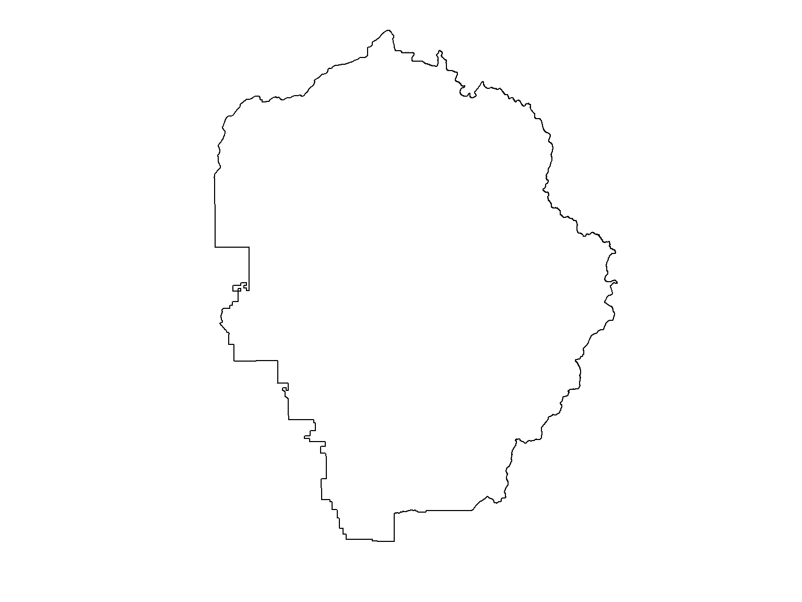

Geospatial Data
Physical World → GIS World

Importing and Plotting Vector Data

A common projection system is Universal Transverse Mercator (UTM). UTM divides the planet up into 60 zones that are 6 degrees wide. The USA falls in zones 10-19.

To import spatial data, you have to specify the source and layer.
Sources can be
Most sources can contain multiple layers, so you have to specify the one you want by name.
The argument for the source is often called dsn (data source name)
Some sources only contain a single layer (e.g., Shapefile), so you can skip the layer.
sf is a relatively new package for working with vector data. It combines the functionality of the older sp package, as well as select functionality from rgdal and rgeos.
Most of the functions in the sf package start with st_, which stands for ‘space time’ and matches similar functions in PostGIS.
st_layers(source) - returns the names of avilable layers in a source
st_read(source, layer) - import into R
Import the boundary for Yosemite National Park
First we list the layers in the data folder.
## Driver: ESRI Shapefile
## Available layers:
## layer_name geometry_type features fields
## 1 veg37 Polygon 6512 26
## 2 Yosemite_POI Point 2720 30
## 3 yose_boundary Polygon 1 11
## 4 veg37_alliances NA 39 3## Import the 'yose_boundary' layer (which is a Shapefile)
yose_bnd <- sf::st_read(dsn="./data", layer="yose_boundary")## Reading layer `yose_boundary' from data source `C:\Workshops\R-Spatial\rspatial_mod\outputs\rspatial_scgis19\docs\data' using driver `ESRI Shapefile'
## Simple feature collection with 1 feature and 11 fields
## geometry type: POLYGON
## dimension: XY
## bbox: xmin: -119.8864 ymin: 37.4947 xmax: -119.1964 ymax: 38.18515
## epsg (SRID): 4269
## proj4string: +proj=longlat +datum=NAD83 +no_defsTo view the metadata of a layer before brining it into R, use rgdal::ogrInfo()
Because Shapefiles only contain one layer, you can combine the arguments:
See what type of object this is:
## [1] "sf" "data.frame"We see that yose_bnd is both a sf object as well as a data.frame. This means we should be able to use the functions designed for either of those objects.
## Simple feature collection with 1 feature and 11 fields
## geometry type: POLYGON
## dimension: XY
## bbox: xmin: -119.8864 ymin: 37.4947 xmax: -119.1964 ymax: 38.18515
## epsg (SRID): 4269
## proj4string: +proj=longlat +datum=NAD83 +no_defs
## UNIT_CODE
## 1 YOSE
## GIS_NOTES
## 1 Lands - http://landsnet.nps.gov/tractsnet/documents/YOSE/METADATA/yose_metadata.xml
## UNIT_NAME DATE_EDIT STATE REGION GNIS_ID UNIT_TYPE
## 1 Yosemite National Park 2016-01-27 CA PW 255923 National Park
## CREATED_BY METADATA
## 1 Lands http://nrdata.nps.gov/programs/Lands/YOSE_METADATA.xml
## PARKNAME geometry
## 1 Yosemite POLYGON ((-119.8456 37.8327...## [1] "UNIT_CODE" "GIS_NOTES" "UNIT_NAME" "DATE_EDIT" "STATE"
## [6] "REGION" "GNIS_ID" "UNIT_TYPE" "CREATED_BY" "METADATA"
## [11] "PARKNAME" "geometry"To plot just the geometry of a sf object (i.e., no symbology from the attribute table), we can use the st_geometry() function.

kml_fn <- "../docs/data/berkeley_public_sites.kml"
file.exists(kml_fn)
rgdal::ogrListLayers(kml_fn)
brk_sites <- rgdal::readOGR(kml_fn, "Public Facilities")
summary(brk_sites)rgdal can import from a file geodatabase also. In this case, the source is the name of a directory.
gdb_dir <- "../docs/data/sf_crime.gdb"
file.exists(gdb_dir)
rgdal::ogrListLayers(gdb_dir)
sfcrime_sp <- rgdal::readOGR(dsn=gdb_dir,layer="San_Francisco_Crimes")
class(sfcrime_sp)
names(sfcrime_sp@data)
plot(sfcrime_sp, pch=16, cex=0.4, axes=T, asp=1)To determine if you can export as well as import a specific file format, look at the OGR driver info by running ogrDrivers().
## name long_name write copy isVector
## 17 ESRI Shapefile ESRI Shapefile TRUE FALSE TRUE## name long_name write copy isVector
## 34 KML Keyhole Markup Language (KML) TRUE FALSE TRUE## name long_name write copy isVector
## 47 OpenFileGDB ESRI FileGDB FALSE FALSE TRUEVector layers can be viewed with the basic plot() function
There are lots of optional arguments to make it look nicer
There are plotting packages for even nicer output (e.g., ggplot2)
Notice how its squished? We can fix that with the asp argument (aspect ratio).
Other common arguments for plot()
Plotting Examples
Here we pass the col argument to give the polygon a fill.
tmap, ggplot2, ggmap, or lattice